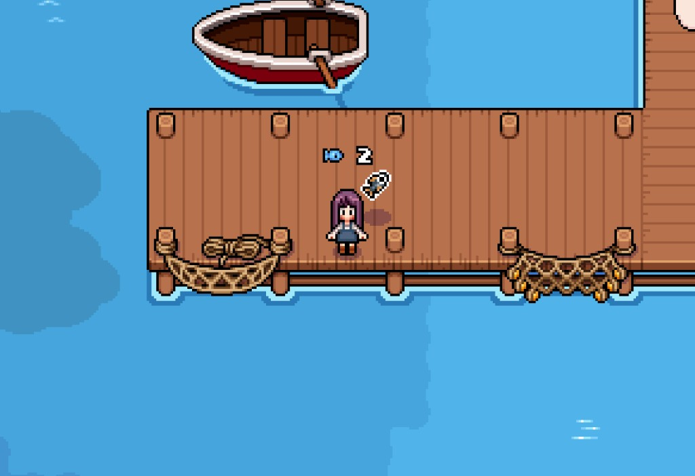
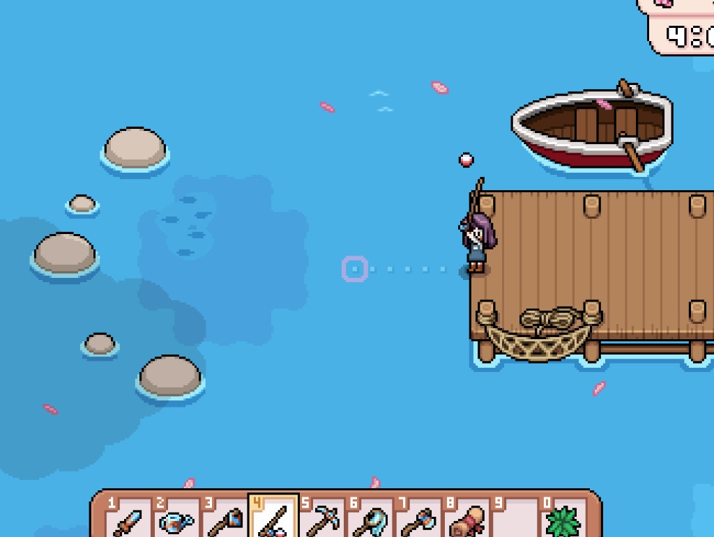
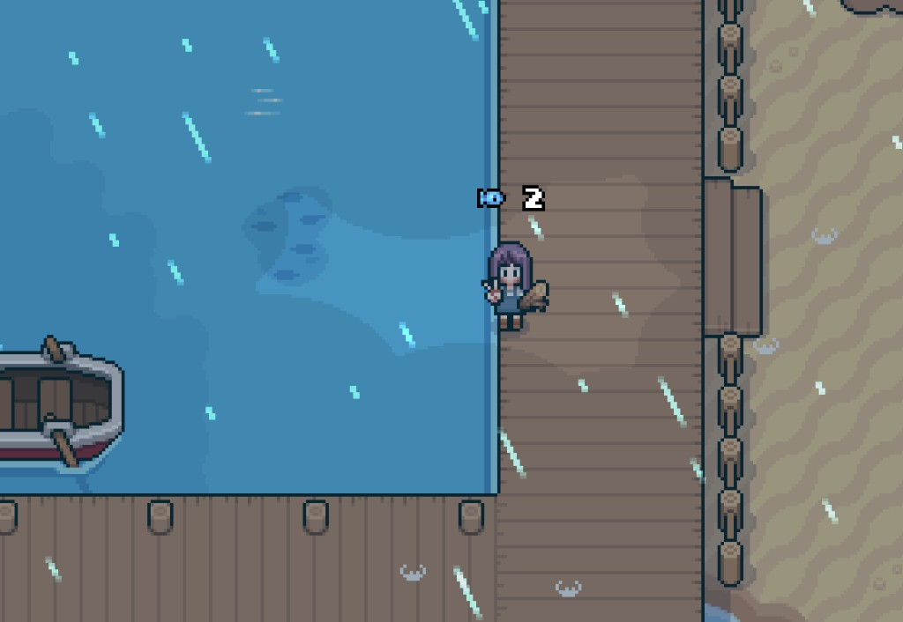

Quick answers
- Rod cost is real—seeds and watering come first.
- Practice close to town or farm water.
- Rainy days pair well with fishing energy.
- Keep quest fish; ship duplicates.
- You do not need ocean mastery in week one.
When we bought the rod
After a seed buffer existed. The tackle shop listed a worn rod around mid-hundreds of tesserae on our file—confirm current price in-game.
Casting without tilt
Short sessions. Quit when the bar is low. Board quests for specific fish can wait until you enjoy the minigame.
Safe to skip
- Every fish encyclopedia entry in Spring
- Fishing instead of watering
Screenshots from our save
Real Fields of Mistria shots from our first-season play. Captions in English; in-game UI language may differ.




FAQ
Fishing for money first?
Crops still beat forced fishing early.
Quest wants a fish I cannot catch?
Park the quest; skill grows with practice.
Unofficial fan guide. Not affiliated with NPC Studio. Verify details in your game version.